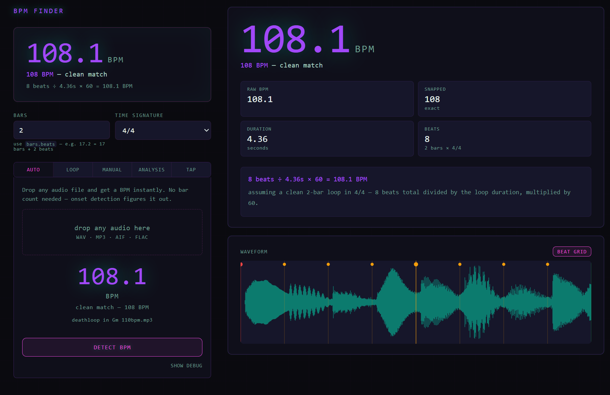

Personal Project · 2026
BPM Finder: Building a Music Analysis Tool
A narrow personal pain point became a prototyping vehicle for something bigger — and the process of building it turned out to be as interesting as the tool itself.
Context
This is a personal project built to scratch my own itch, using AI-assisted development as a deliberate prototyping method. I play piano and produce music in Ableton. The goal was to take a real problem seriously — plan first, build second — and see how far that approach could get me without a traditional development background.
Problem
When I'm jamming on piano and land on something worth keeping, my first move is figuring out the BPM of what I just played. It sounds trivial (and as I get better at transcribing, it might be). For now it's clunky: export from Ableton, try to tap it out, guess and check. Most BPM tools assume a full song with a clear drum pattern. They're not built for a four-bar piano idea you recorded at whatever tempo felt right.
That was the original problem. The more interesting one surfaced once I had something real to use.
What I Did
Before writing any code, I described the problem to Claude and asked whether it was actually tractable. That conversation did two things: it shaped the scope, and it killed a bad idea early.
My first instinct was to build a full audio-to-MIDI transcription tool — something that could listen to a track and tell me what was being played. After a proper feasibility discussion, I concluded that perfect transcription is an unsolved ML problem, the existing tools (Chordify, Moises, AnthemScore) require too much manual cleanup to be useful, and my existing workflow was already near-optimal for that use case. Knowing what not to build was the first real product decision. It freed me to focus on something I could actually ship.
The second deliberate decision was format. The output is a single HTML file: no server, no hosting cost, no install friction. That was a product choice, not a technical limitation. A web app with a login screen is unnecessary at this stage. Frictionless to open and use was the point.
Features
The tool has five modes, each solving a different version of the same core problem.
Auto-detect is the one-click flow: drop any audio file and the tool runs onset detection to find the BPM without you specifying anything. No bar count, no setup. This became the default tab because it's the fastest path from "I have audio" to "I have a number."

Loop mode is for precise measurement. Export a specific loop from Ableton, drop it in, set your bar count using Ableton's own notation (17.2 = 17 bars, 2 beats), and get an exact BPM from the file's true duration. The waveform view with beat grid overlay shows where the tool thinks each beat lands and flags whether the energy at that position is strong, weak, or silent.
Tap tempo gives you a rolling average across your last eight taps with a three-second auto-reset, so stale taps from a false start don't poison the reading. A live rhythm consistency chart shows how even your tapping is across the session.
Manual is the escape hatch: if you already know the clip length in seconds, just enter it.
Analysis is the feature that wasn't in the original brief. I started using Moises and Fadr to separate tracks into individual stems. Once those stems exist as separate files, you can drop each one into the tool and get a per-stem report: probable key and mode from a chroma profile, dominant pitch class, timbre descriptors (bright vs. dark, tonal vs. noisy), a waveform shape estimate (sine, saw, complex), stereo width, and energy over time. The practical output is a reconstruction brief — a starting point for recreating something you heard rather than transcribing it note by note. A bass stem might come back as: D minor, mono, low spectral centroid, probably a sine or clean sub, minimal processing. That's enough to open a synth and start.
One small detail worth mentioning: the accent color shifts as you move your cursor across the screen, cyan on the left bleeding into pink-magenta on the right. It does nothing functional. It's there because the tool should feel good to use, not just work.
What I Evaluated and Didn't Build
The roadmap that came out of this is longer than what shipped. Mic recording would remove the Ableton export step entirely. A tempo drift map would chart BPM variation across a full recording and flag where you're rushing or dragging — the most differentiated idea in the set, and one that doesn't exist as a standalone web tool. A session logger with trend analysis across practice sessions is the natural monetization gate if this ever becomes a product. A groove quantifier would measure where your hits land relative to the grid and give you a swing percentage.
These weren't planned features. They were discovered ones — visible only because there was a prototype to think with.
Outcome
The tool solves the original problem well. I'm testing it with a small group of musician friends to see whether the friction points I felt are shared, and whether the stem analysis feature lands the way I think it does.
The cleaner outcome is a sharper sense of the opportunity. What started as a BPM calculator is now a focused music analysis tool with a coherent feature set, a specific target user — producers who work in a DAW and want to understand what they're hearing — and at least one feature that doesn't exist anywhere else in quite this form. Whether that becomes a product is an open question. The process of getting here was the point.